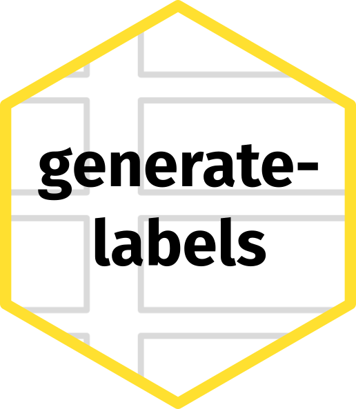

![]()
I love microbiology. Bacteria in particular have fascinated me for a long time. If you can imagine some sort of biological function or behaviour, there is a bacterium somewhere that does it.[citation needed] There are parts of microbiology that I do not particularly enjoy though. (Micro)biological lab work can be time and resource intensive, particularly when both biological and technical replication are necessary. For example, during my master’s studies in Biology at ETH Zurich, I worked with Cécile Lorrain of Bruce McDonald’s group for a three month rotation project. We screened a large collection of natural isolates of Zymoseptoria tritici, a fungus causing massive crop losses in wheat, for their resistance to a range of abiotic stressors.1 We had a panel of 117 strains that we tested in multiple replicates against four stressors (and a control treatment), resulting in over 1,200 agar plates. Imagine that after preparing the growth medium and pouring all of these plates, you also need to manually label each one with some identifying information like strain, experimental treatment or the date. At the very least you will want a unique identifier that can be looked up in a table containing meta data. There was an alternative: We had Avery-Zweckform adhesive labels in stock. A corresponding Word template allowed manually entering label content electronically and the printing it onto the sticker sheets using a standard office printer. Not even wanting to bother with the slightly clunky Word template, I set out to write a script that would output a printable PDF layout when supplied with a list of sample names.
In the beginning there was Bash
The first version of the generate-stickers script was conceptually based on a script another lab member had written to generate printable layouts for a different kind of experiment.2 When executed, it would interactively ask the user for the path to an input txt file containing one sample name per line, perform a few basic checks on the input and then iteratively generate LaTeX code3 which would generate the printable PDF using pdflatex. I “released” version 1.0 of the script in November 2020 by sharing it with other lab members. Version 1.1 followed the next day, fixing a critical bug. Being my first foray into Bash scripting, it wasn’t anything to write home about, but it did what I needed it to do.
Python does it better
After a two month break following my rotation project, I came back to do my Master’s thesis with Cécile. This time we were going to run an evolution experiment4 to investigate the evolvability of fungicide resistance in the same fungal plant pathogen, Zymoseptoria tritici. Being good scientists, we wanted to get generalisable results and thus chose to start the experiment with eight diverse ancestral strains, expose them to five different treatments (low and high doses of two fungicide with different mechanisms of action as well as a control), and replicate every combination three times. This resulted in us culturing 120 populations for 14 cycles, each five days long. In order to be able to recapitulate evolution through sequencing later on, we froze samples from all populations at every second cycle.5 Over the duration of the experiment (70 days in total), I would need to prepare 840 freezer stocks, which included labelling tubes. Thus I again turned to the generate-stickers script.
Being lazy, I did not even want to type out the 840 sample names. Due to their modular nature ([ancestral strain]-[experimental cycle]-[experimental treatment]-[replicate population], e.g. IPO323-C14-CTRL-1), I set out to assemble them programmatically. Unfortunately, I quickly reached the limits of what (my) Bash (skills) could accomplish and I decided to rewrite the script in Python. In addition to the basic functionality of the Bash script, I added the ability to sequentially assemble sample names as well as print the current month and year6. The script would also automatically adjust the font size of a given label if the sample name was too long. Version 2.0 was again “released” in February 2021. While using the script to never have to label anything by hand, I made further improvements and bug fixes over the next months.
I graduated in September 2021 and joined Macarena Toll-Riera’s group, at that time still at ETH Zurich, to do a PhD. With evolution experiments being a central to my research, the script got a lot of use (I have printed thousands of labels over the last 3.5 years). I further expanded it’s abilities, switched to xelatex for UTF-8 support and published it on GitHub starting with version 2.5.0. For example, I added the option to skip a certain amount of stickers on the sheet and allowed the user to control the script’s behaviour through command line arguments. Nevertheless, generate-stickers was always just a script, meaning I’d have to place code and input files in the same folder or pass longer file system paths using command-line arguments.7
Packaging
Over the years, I had thought about converting the script to a python package. Since I had never developed a Python package before, I never ended up committing the time since it would be a decent amount of work. Then, earlier this year, the layout generated by the script got messed up. I could never figure out what exactly caused the issue, though I suspect it might have been an update to a TeX package. Having my labelling needs unmet finally provided the push I needed to go back and invest time into taking generate-stickers to the next level. I improved the typesetting of the PDF in LaTeX and how file system paths are handled. On the development side, I used the opportunity of converting the script to a package to learn uv and add some basic unit testing combined with continuous integration on GitHub. I also decided to choose a new name for the package: generate-labels 3.0.0 is now available to install from PyPi and GitHub. Finally, in preparation for this blog post, I created a hex sticker for the package, putting a metaphorical neat little bow around it.

Footnotes
Think low and high temperatures, salt stress, etc.↩︎
You would spray wheat plants with a pathogen, let the infection proceed, then collect leafs, stick them onto these sheets of paper in predefined locations, scan them and then run them through an automated image analysis pipeline.↩︎
Is that what it’s called? Code?↩︎
To learn more about these, I highly recommend perusing the long-term evolution experiment’s website↩︎
Do you see where this is going?↩︎
Why not the entire date? Who knows↩︎
I got around this with an alias in my
.zshrcfile↩︎
Reuse
Citation
@online{ebert2025,
author = {Ebert, Gleb G.},
title = {Generating {Printable} {Labels}},
date = {2025-05-25},
url = {https://www.gl-eb.me/blog/posts/2025-05-25_generate-labels/},
langid = {en}
}